Run Janna
Master's Student
Robotics & AI Researcher in Intelligent Adaptive Locomotion
About Me
I am a robotics researcher specializing in the control and development of specialized automated systems. My work bridges mechanical design, embedded systems, and machine learning to create intelligent adaptive locomotion for legged machines, exoskeletons, and underwater inspection robots.
Education
➤ 2015 to 2018 | Cert.in Tech.Ed | KING MONGKUT’S UNIVERSITY OF TECHNOLOGY OF NORTH BANGKOK (KMUTNB) | Thai-German Pre-Electrical Engineer School (PEE), Major in Electrical and Electronics, GPAX 3.69.
➤ 2018 to 2022 | B.Eng. | KING MONGKUT’S UNIVERSITY OF TECHNOLOGY OF NORTH BANGKOK (KMUTNB) | Department of Electrical and Computer Engineer (ECE), Major in Electrical Engineer (Control), GPAX 3.57.
➤ 2021 | B.Eng. | MULTIMEDIA UNIVERSITY OF MALAYSIA (MMU) | Department of Electrical Engineer (EE), Under the Student Mobility Programme (Online) between the Multimedia University of Malaysia and King Mongkut’s University of Technology of North Bangkok, GPA 3.92.
➤ 2025 to 2027 | M.Eng. | Vidyasirimedhi Institute of Science and Technology (VISTEC), Information Science & Technology (IST), Major in Inspection Robotics, Bio-Inspired Robotics & Neural Engineering (BRAIN-Lab).
Certifications
➤ 2023 | Personnel Qualification and Certification in Nondestructive Testing (NDT) Magnetic Particle Testing (MT) Level II Certification (Yoke Technique).
➤ 2024 | Personnel Qualification and Certification in Confined Space Safety Training.
Award
➤ 2026 | IROS 2026 IEEE Robotics and Automation Society (RAS) Travel Support award.
Highlights
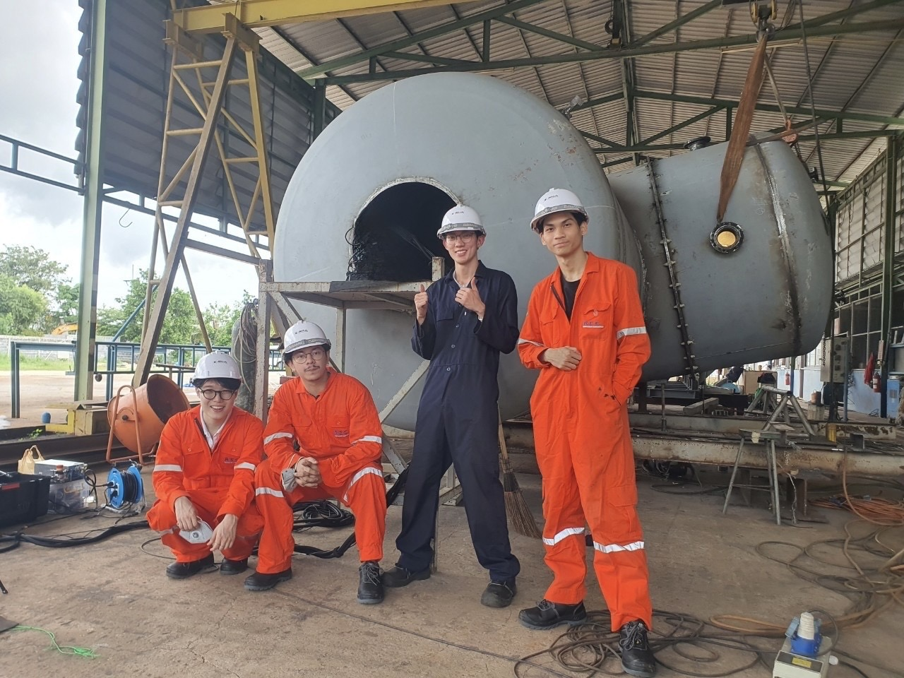
HERO Robot First Deployment
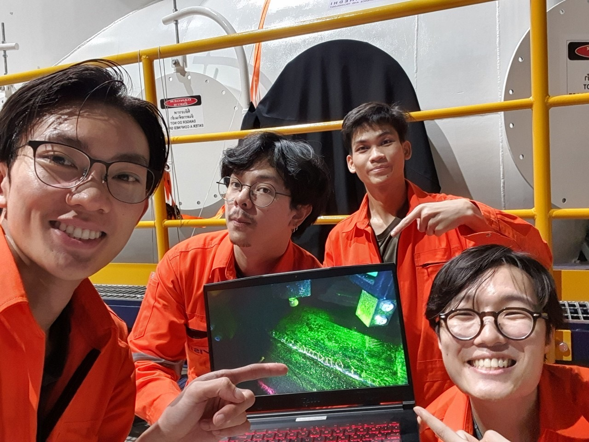
HERO Demonstration
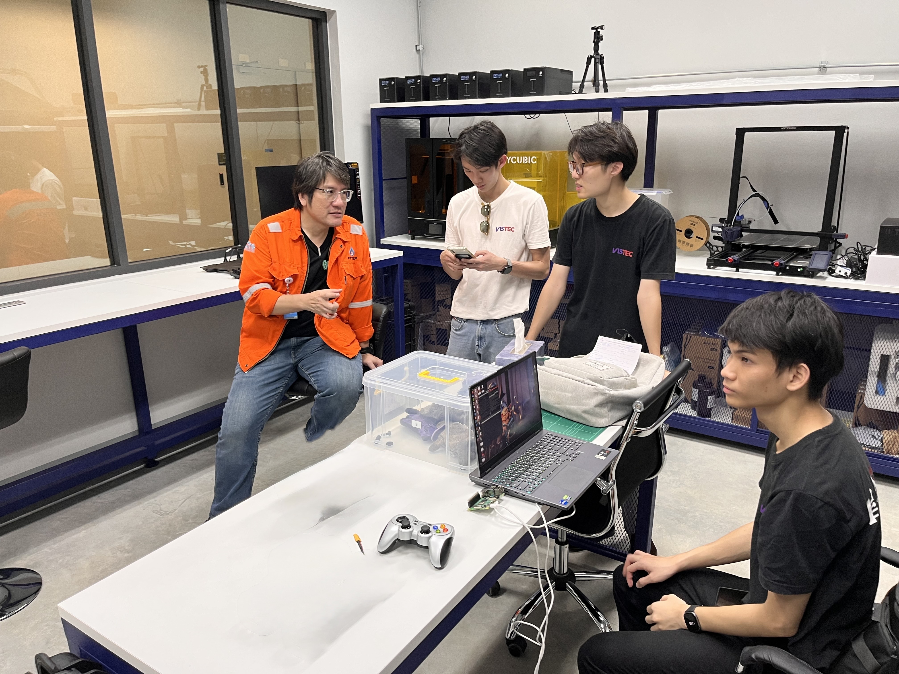
HERO Initial Discussion
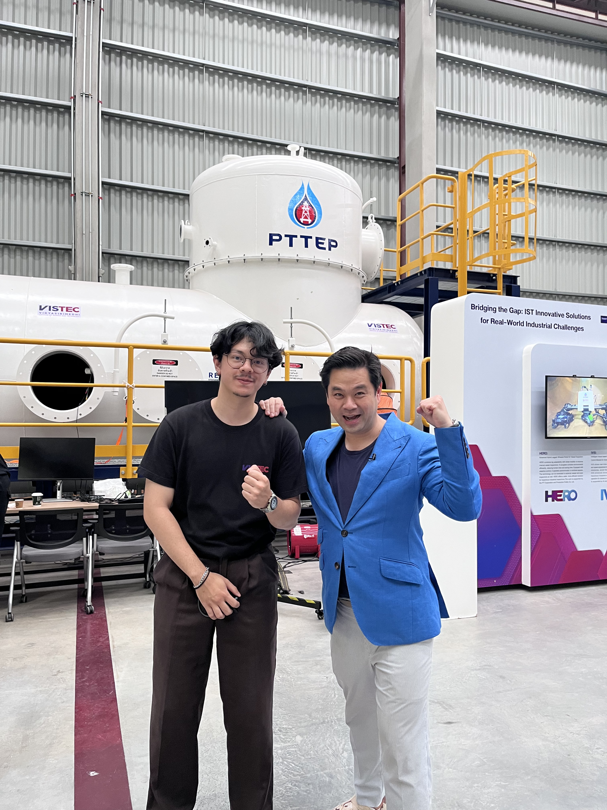
HERO Presentation
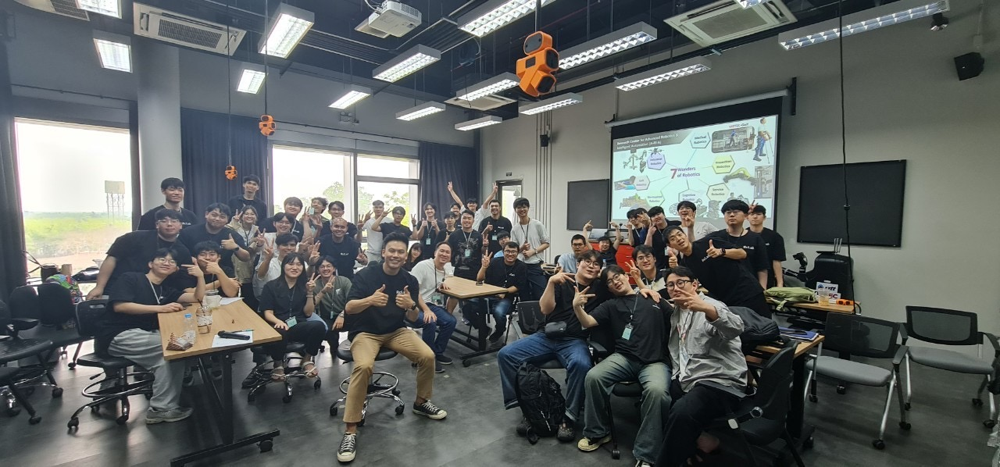
VISTEC-KMU Workshop
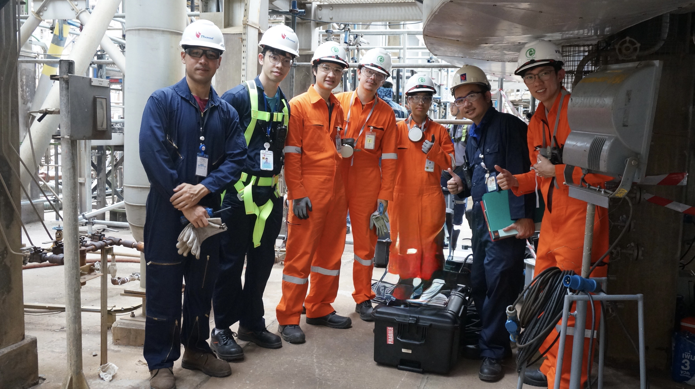
REINE2 2025 MTA
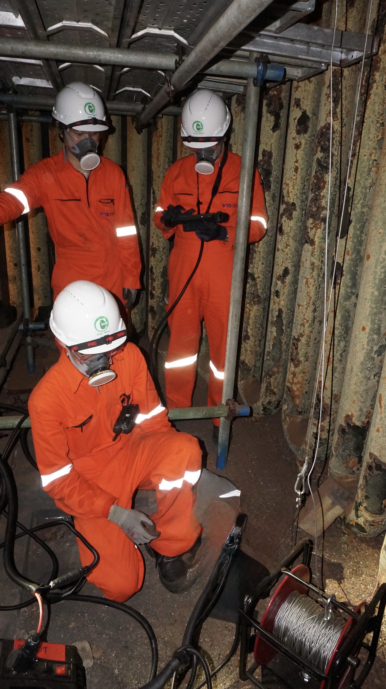
REINE2 2025 MTA Deployment
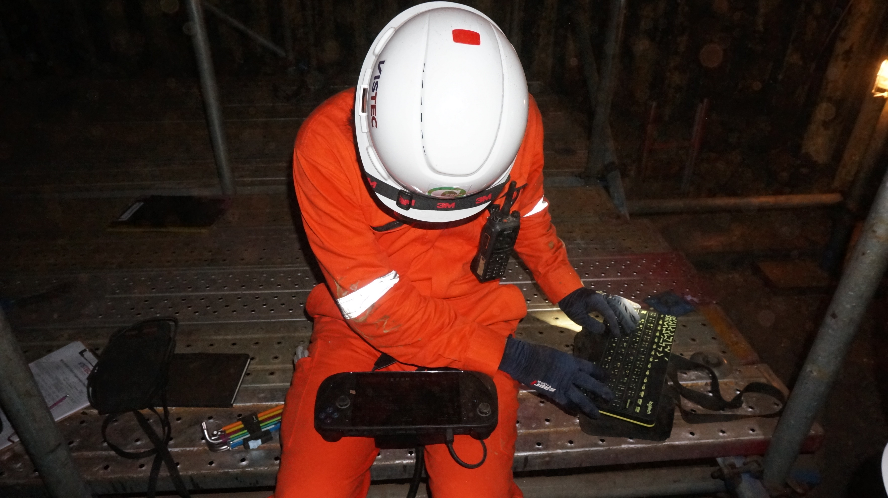
REINE2 2025 MTA Deployment
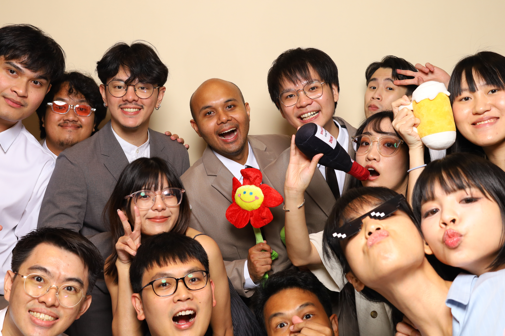
Wedding Party
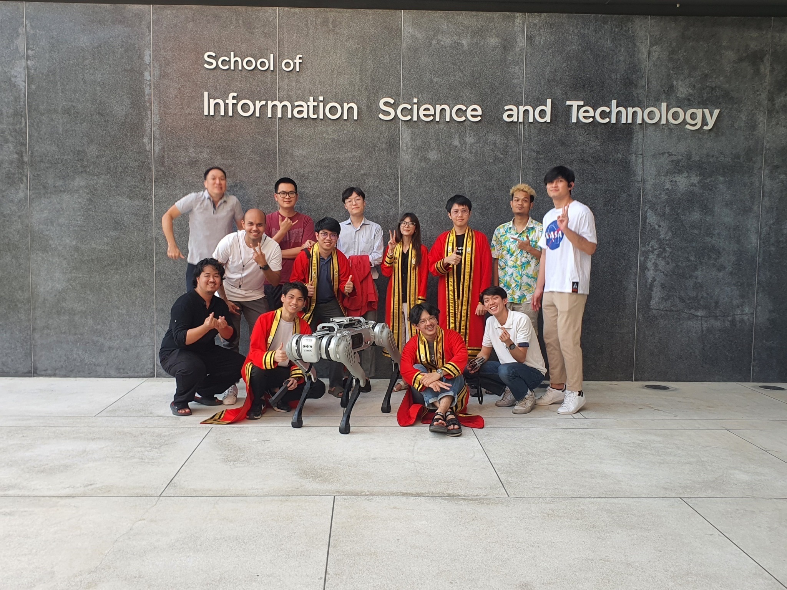
Graduation 2022
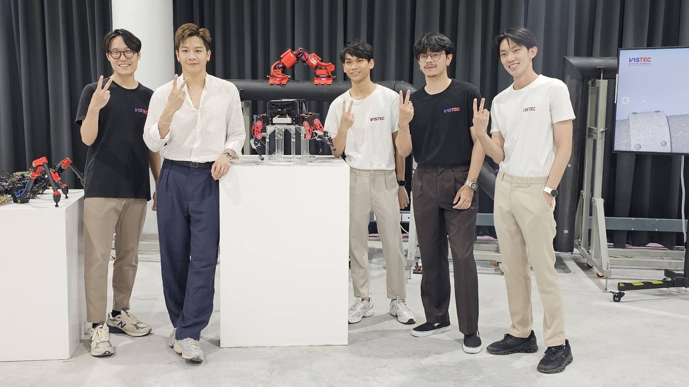
WAI Presentation
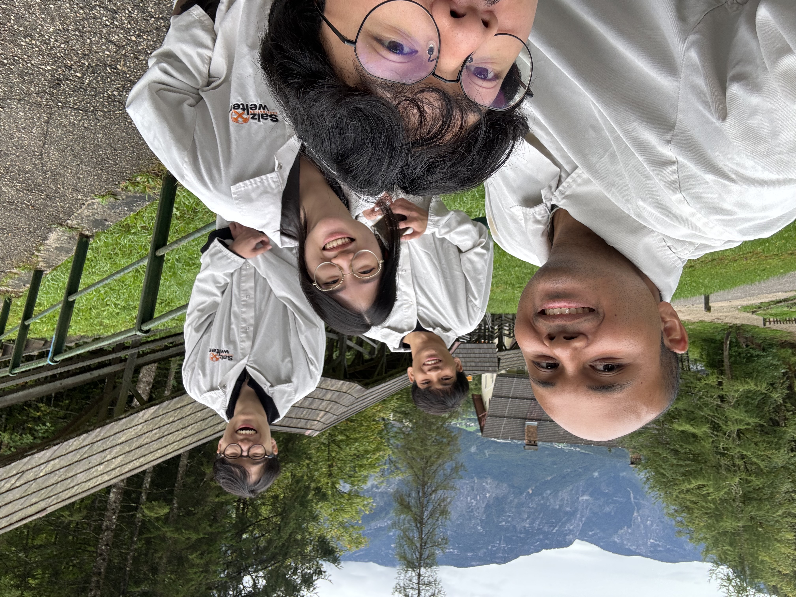
German-Austria Trip
Technical Skills
Industrial Projects 👷🏻♂️
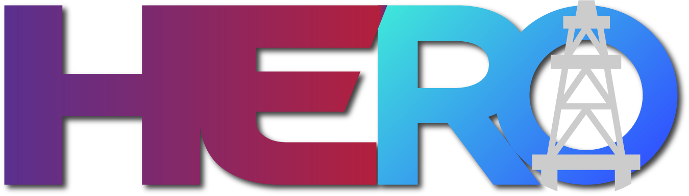
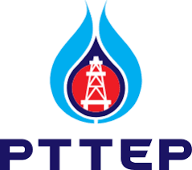
➤ Advanced Hybrid LEgged-Wheeled RObot for Internal Vessel Inspection (HERO-2)
➤ Adaptive, multi-functional, robotics technology for various curved surface inspection (HERO-2.1)
➤ Efficiency ImpRovEment through FIred Heater/FurNace ClEaning (REFINE-2)
Incoming Works 📚
[IROS-2026] Automated Weld Seam Detection and 3D Map Integration for Industrial Vessel Inspection Using Depth Cameras and 3D LiDAR
The inspection of oil and gas pressure vessels is a dangerous, tedious, and difficult task due to confined environments and strict safety constraints. While robots can be employed to reduce human exposure, most existing inspection robotic systems rely mainly on image-based assessment and still lack spatially consistent weld seam referencing for maintenance integration. This paper presents an integrated depth-based seam detection and mapping pipeline that combines deterministic depth-signal seam extraction with LiDAR–IMU odometry for globally referenced weld seam localization. Seam centerlines are estimated from RGB-D depth profiles through plane alignment and polynomial detrending, followed by adaptive matched filtering to enable geometric detection. The detected seam offsets are fused with FAST-LIO2 (Fast Direct LiDAR-Inertial Odometry) pose estimation to generate globally referenced seam trajectories without modifying the underlying odometry. Experimental validation of the proposed method on longitudinal and circumferential seams shows per-frame centerline mean absolute errors (MAEs) of 0.76~mm and 0.87~mm, respectively. The global seam trajectory MAE is 13.37~mm (P95 = 26.06~mm). Along-seam target-point localization (simulated defect points by using black markers) achieves 2.60~cm MAE with 96.7\% ordering consistency across 30~cm ground-truth intervals. The resulting seam-consistent spatial annotation supports target-point indexing in global coordinates and direct registration with LiDAR maps or CAD models, enabling inspection-to-maintenance digital integration.
Authors: Nontanut Chitsiriparat, Run Janna1, Theerawath Phetpoon, Wasuthorn Ausrivong, Kanut Tarapongnivat, Worameth Nantareekurn, Suppachai Pewkliang and Poramate Manoonpong.Collaboration: PTT Exploration and Production Public Company Limited, Bangkok, Thailand.
Publications 📚
[IROS-2025] LITHE-joint: Variable Stiffness Compliant Spherical Contact Joint in an Under-Actuated System
The concept of morphological computation (MC) is applied in the robotics field to improve the design and reduce the complexity of control systems. The MC uses mechanical intelligence, where stiffness properties play an important role as constraints to enhance system flexibility and to store elastic energy. This can reduce the number of required actuators. According to the MC principle, This work proposes LITHE-joint: variable stiffness compliant spherical contact joint in an under-actuated system. This compact design for a 2-degrees of freedom (DOF) compliant spherical contact joint with controllable stiffness uses a pneumatic artificial muscle (PAM). This joint requires only one PAM actuator to control stiffness in a 2-DOF system, achieving a stiffness of up to 0.38 Nm/rad with a bandwidth of 0.1967 Nm/rad. With its variable stiffness properties, the joint is able to adapt its bending behavior, enabling energy redistribution of torque and angle. The modulation of torque and bending angle is governed by joint stiffness and the passive body dynamics. The benefits of the passive, compliant joint with a variable stiffness property are demonstrated by using as the spine of an under-actuated robot, controlling the passive bending of the body and the robot’s walking direction using the adjustable stiffness.
Authors: Sanpoom Punapanont, Run Janna, Harn Sison and Poramate Manoonpong.[AMAM-2025] A Framework for Online Human-Exoskeleton Activity Classification and Gait-Lab Control: Towards Automated Gait Rehabilitation
Accurate identification of human-exoskeleton activities (sitting, standing, walking, and stair ascent/descent) is crucial for effective automated gait rehabilitation. Inaccurate activity recognition leads to suboptimal exoskeleton control and hinders rehabilitation progress. Therefore, this paper presents a framework for online human-exoskeleton activity classification, demonstrating its performance on a real exoskeleton in a gait lab environment. A key contribution is an online fine-tuning method that enhances the classifier's adaptation to unseen data, addressing the challenges of dynamic human-exoskeleton interactions. This online motion classification method achieves high-accuracy identification of human-exoskeleton activity. This information can be used to proactively control the treadmill to achieve an automated gait rehabilitation process.
Authors: Natchaya Sricom, Matas Manawakul, Run Janna, Kanut Tarapongnivat, Sanpoom Punapanont, Chaicharn Akkawutvanich and Poramate Manoonpong.[IROS-2024] Online Adaptive Impedance Control with Gravity Compensation for Interactive Lower-limb exoskeleton
While lower-limb exoskeletons have been increasingly used for gait assistance and rehabilitation, most of them continue to function as assistive devices in the exoskeleton-user relationship as a leader and follower. This limits the user’s ability to interactively contribute to gait control. Therefore, this study proposes an interactive user-exoskeleton control strategy to translate the exoskeletons into interactive compliant companion devices with the exoskeleton-user relationship as the collaborator. This strategy is implemented through online adaptive impedance control with gravity compensation (OAIC-GC). It relies solely on internal pose feedback (joint position) rather than external sensors such as electromyography, torque, or force, as utilized in other assist-as-needed (AAN) control methods. The OAIC-GC can automatically capture the mechanical impedance dynamics of the user’s lower limbs during walking and thus facilitate adaptive, versatile, and personalized gait assistance. It is evaluated using a real lower-limb exoskeleton system with six degrees of freedom (DOFs) across different users engaging in various activities. These activities include symmetrical and asymmetrical walking on a split-belt treadmill at different speeds, as well as walking up stairs. The results indicate a significant improvement in the exoskeleton’s performance in terms of adaptability and movement smoothness under all activities when compared to traditional control. The proposed control reduces joint assistance torque across all exoskeleton joints, enhancing user interaction and comfort. This enables users to actively control their gait patterns, enabling the exoskeleton to operate in an interactive assist-as-needed (IAAN) mode.
Authors: Run Janna, Kanut Tarapongnivat, Natchaya Sricom, Chaicharn Akkawutvanich, Xiaofeng Xiong and Poramate Manoonpong.Collaboration: Embodied Artificial Intelligence and Neurorobotics Laboratory, SDU Biorobotics, the Mærsk Mc-Kinney Møller Institute, University of Southern Denmark (SDU), Odense, Denmark.
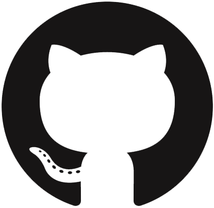
Github[CLAWAR-2024] Adaptable Segmented Straps with Anti-slip Pads (ASAP) for Modular Assistive Knee Exoskeleton (MAKE) Enhancement
This paper introduces a modular assistive knee exoskeleton designed to enhance physical gait assistance. The exoskeleton is engineered to support flexion/extension motions of the knee joint to mitigate slippage across various activities (walking, sit-stand, and walking up-down stairs) and accommodate personalized adjustments. A specific design approach involving a flexible strap with an anti-slip pad feature is proposed to address these requirements. The results indicate that our design is more effective in maintaining its position than the traditional one in all testing activities and can reduce a peak torque at the extreme slipping position during walking by 47% compared to the traditional design. This research contributes to the advancement of assistive technologies for mobility support and offers insights into the practical implementation of modular exoskeleton systems.
Authors: Kanut Tarapongnivat, Sanpoom Punapanont, Run Janna, Matas Manawakul, Suksakaow Mahuttanatan, Chaicharn Akkawutvanich and Poramate Manoonpong.[CLAWAR-2023] Hybrid Omnidirectional Wheeled Climbing Robot with an Electromagnet for Inspection
The paper presents a mobile robot for climbing on vertical ferromagnetic surfaces. The robot was designed with hybrid omnidirectional rubber/silicone roller wheels for proper asymmetric friction force generation and a controllable electromagnet for ferromagnetic surface adhesion. The friction force of rubber and silicone rollers and the adhesion force of the electromagnet were investigated. An embedded electronic system with a mobile processor was installed on the robot to allow for remote control. Our results show versatile robot climbing on a ferromagnetic wall with omnidirectional motion and a lower adhesion force-to-weight ratio as compared to that of the others.
Authors: Kanut Tarapongnivat, Run Janna, Worameth Nantareekurn, Wasuthorn Ausrivong, Arthicha Srisuchinnawong, Naris Asawalertsak, Suppachai Pewkliang, and Poramate Manoonpong.Collaboration: PTT Exploration and Production Public Company Limited, Bangkok, Thailand.